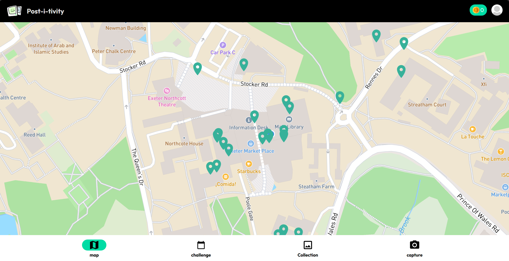
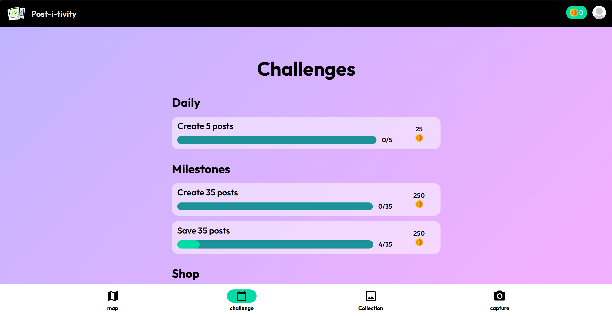

Post-i-vity
Post-i-vity is a fully-fledged web application where users can create posts on campus and share them with others in close geographical proximity. It aims to foster social interactions and community engagement among students. Users can complete challenges to earn coins, which can be redeemed for rewards within the app.
Key Features:
- Interactive map
- Geographical proximity-based posts
- Challenges and milestones for user engagement
- Reward system with redeemable coins
- Built with Django, PostgreSQL, and modern web technologies
Screenshots:


Click the icon to visit the live app: